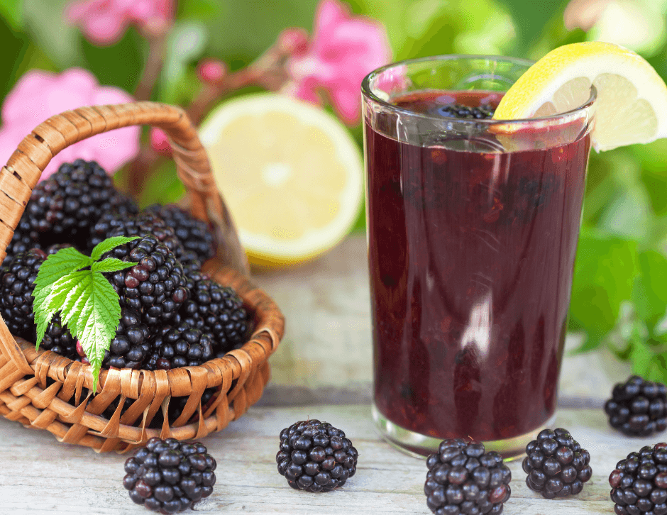

Suco de Amora

INGREDIENTES:
1-300g de amora
2- 500ml de �gua
3- � lim�o
4- 2 folhas de ortel�
A�ucar ou ado�ante a gosto
MODO DE PREPARO:
-Bata todos os ingredientes no liquidificador,coe o suco e sirva.
-Caso voc� goste de um suco mais grosso, n�o precisa coar a sua bebida.